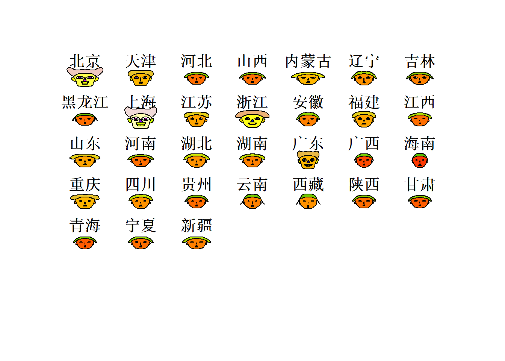

R多元数据作图
Boylad · 2018-10-05
均值条图
data <- read.table("clipboard", header = TRUE)
barplot(apply(data, 1, mean), las = 2) #按行作均值条形图，las设置轴标签方向barplot(apply(data, 2, mean)) #按列作均值条形图barplot(apply(data[2:8], 2, mean)) #去掉第一列后的数据按列作均值条形图barplot(apply(data, 2, median)) #按列作中位数条形图pie(apply(data, 2, median)) #按列作均值饼图均值条图通常用来比较个变量在不同观察单位上的均值变化大小。从上图可以看到，贵州、甘肃、青海居民消费水平要低于北京、上海和广东，居民在食品方面的支出远大于其他方面。
箱线图
boxplot(data) #按列作箱线图boxplot(data, horizontal = TRUE) #箱线图中图形按水平放置从上图中可以看出，食品消费支出远高于其他项目。
星相图
星相图是雷达图的多元表示形式，它将每个变量的各个观测单位的数值表示为一个图形，\(n\)个观察单位就有\(n\)个图，每个图的每个角表示每个变量。参数\(full\)表示图形形状，\(draw.segments\)表示分支形状,\(key.loc\)定位图例。
stars(data, full = TRUE,
key.loc = c(13, 1.5)) #具有图例的360度形象图stars(data, full = FALSE,
key.loc = c(13, 1.5)) #具有图例的360度形象图stars(data, full = TRUE, draw.segments = TRUE,
key.loc = c(13, 1.5)) #具有图例的360度彩色圆形形象图stars(data, full = FALSE, draw.segments = TRUE,
key.loc = c(13, 1.5)) #具有图例的180度彩色圆形形象图从图中可以看出，北京、上海、广东、浙江四个地区的消费情况较为突出，其他地区的消费状况则大致相同。
脸谱图
利用\(p\)个指标的数值就可以勾画出一个人的脸谱，而这些脸谱之间的差异，反映了所对应的样品之间的差异特性。参数\(nrow.plot\)表示图形显示行数，\(ncolplot\)表示图形显示列数,\(print.info\)显示变量对应脸部元素信息。
library(aplpack)
faces(data, ncol.plot = 7, print.info = FALSE) #按每行7个作脸谱图
faces(data[,2:8], ncol.plot = 7,
print.info = FALSE) #去掉第一个变量按每行7个作脸谱图faces(data[c(1,9,19,28,29,30), ],
print.info = FALSE) #选择某些观测数据作脸谱图调和曲线图
调和曲线图是\(D.F.Andrews\)于1972年提出的三角多项式做图法，所以又称为三角多项式图，其思想是把高维空间中的一个样本点对应于二维平面上的一条曲线。 设\(p\)维数据\(x=(x_1,x_2,\cdots,x_p)'\)，对应的曲线是： \[f_x(t)=\frac{x_1}{\sqrt2}+x_2\sin t+x_3\cos t+x_4\sin2t+\cdots\hspace{1cm}(-\pi\le t\le\pi)\] \(n\)次观测对应\(n\)条曲线，画在同一平面上就是一张调和曲线图。当各变脸的数值太悬殊时，最好先标准化后再作图。这种图对聚类分析的帮助很大，如果选择聚类统计量为距离的话，同类的曲线非常靠近导致拧在一起，不同的曲线拧成不同的线，非常直观。使用大神编的\(MSG\)包中的\(andrews\_curve()\)函数作调和曲线图:
library(MSG)
andrews_curve(data)andrews_curve(data[c(1, 9, 19, 28, 29,30),]) #选择某些列做图以上内容整理自《多元统计分析及R语言建模》第三章